Práctica 2: Señales en tiempo continuo
Integrantes:
- Arellano Sánchez José Alberto
- López Piedracruz Marcos Antonio
- Luviano Murakawa Tsuioshi Alberto
- Robles Cernas Carlos de Jesus
Contents
Objetivos
Los objetivos de la práctica 2 son los siguientes:
Objetivo General:
- Manipulación básica de MATLAB
Objetivos específicos:
- Gráficas de señales reales y complejas continuas
- Transformación de señales continuas (escalamientos y traslaciones)
- Calculo de energía y potencia de señales continuas
Intorducción
- Historia de Matlab
Matlab es un software matemático con IDE (entorno de desarrollo integrado por sus siglas en ingles), con lenguaje M y multiplataforma.
Cleve Moler crea la primera versión de Matlab en 1984, usando paquetes de subrutinas en Fortran en los cursos de Análisis Numérico y Algebra Lineal, sin tener una necesidad de programas que usaran este lenguaje.
En 1970 se proporcionó un acceso sencillo al software de matrices LINPACK y EISPACK al crearse el lenguaje de programación M.
En 2004 Matlab ya contaba con más de un millón de usuarios, tanto académicos como empresarios.
- Octave
Octave (GNU Octave), es parte de proyecto GNU y a su vez un programa libre para hacer cálculos compatibles en un 99% con Matlab El proyecto fue creado alrededor del año 1988 para ser utilizado en un curso de diseño de reactores químicos, sin embargo, en 1992 se decide extenderlo y, bajo la dirección de John W. Eaton, comienza a desarrollarse siendo su versión Alpha lanzada el 4 de enero de 1993, para aparecer la versión 1.0 el 17 de febrero de 1994.
Octave es muy comúnmente utilizado como alternativa a Matlab al ser de licencia pública general de GNU, siendo Matlab descartado por muchas empresas.
Algunas de las ventajas de Octave son:
- La sintaxis es similar a la utilizada en MATLAB.
- Es un lenguaje interpretado.
- No permite pasar argumentos por referencia. Siempre se pasan por valor.
- No permite punteros.
- Se pueden generar scripts.
- Soporta gran parte de las funciones de la librería estándar de C.
- Puede extenderse para ofrecer compatibilidad a las llamadas al sistema UNIX.
- El lenguaje está pensado para trabajar con matrices y provee mucha funcionalidad para trabajar con éstas.
- Soporta estructuras similares a los "structs " de C.
- PYTHON
En 1989, Guido Van Rossum, decidió empezar un proyecto como pasatiempo dándole continuidad a ABC, un lenguaje de programación desarrollado en el CWI.
ABC fue Creado a principios de los 80’s siendo alternativa e BASIC pero, el hardware disponible en la época hacía difícil su uso. Así Van Rossum creo Python, siendo el nombre escogido debido al gusto de Van Rossum por el grupo Monty Python.
En 1991 se publicó la versión 0.9.0, teniendo ya disponibles las clases por herencia, manejo de excepciones, funciones y tipos moduladores.
Desarrollo
1. Creación de una función
Realizar una funcion que reciba dos parametros 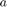 y para que pueda regresar la evaluación: 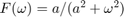
Para poder hacer el realizamos dos codigos, uno al que lo utilizamos unicamente para definir un escalon y el otro en el que se le pide al usuario introduccir los valores de y funcion escalon
sal= @(Escalon)(t>=0); clc clear all; close all; dt=1e-3; t=-10:dt:10; a=5; %input('ingrese a diferente de 0='); El usuario introduce el valor de a w=5; %input('ingrese w='); El usuario introduce el valor de w f_t=exp(-a.*t).*cos(w.*t).*Escalon(t); g_t=exp(-a.*t).*sin(w.*t).*Escalon(t); y_t=(1/abs(a)).*(1/2).*t.*exp(-a.*t).*sin(w.*t).*Escalon(t); fg_t=conv(f_t,g_t,'same').*dt;
2. Funcion para graficar en .
Realizar un programa que pueda graficar funciones de R a R, en un intervalo de [-2,2], para esto utilizamos el escalon del punto anterior, con el fin de hacer más corto la función.
X1=exp(-a.*t).*cos(w.*t).*Escalon(t); Y1=exp(-a.*t).*cos(w.*t).*Escalon(t); Y2=(1/(2.*w)).*exp(-a.*t).*sin(w.*t).*Escalon(t)+(1/2).*t.*exp(-a.*t).*cos(w.*t).*Escalon(t); Y3=(1/abs(a)).*y_t; punto2_P02(X1, Y1, Y2, Y3);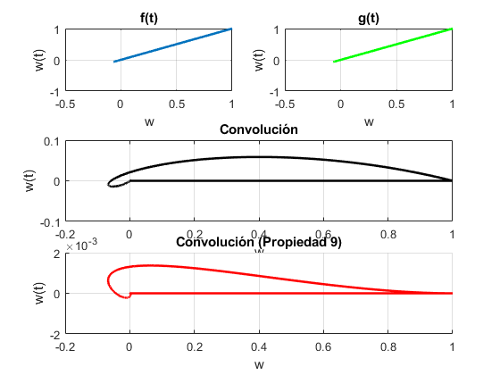
3. Funcion para graficar en a
Realizar un programa que pueda graficar funciones de R a R^2, mostrando la gráfica para esto utilizamos F(w) en [-10,10] de la funcíón, con el fin de hacer más corto la función.
clc clear all; close all; dt=1e-3; t=-1.5:dt:5.5; w=-10:dt:10; f_t=exp(-2.*t).*Escalon(t); subplot(2,2,[1 2]); plot(t,f_t,'g','linewidth',2); grid on title('f(t)'); F_w=1./(2+j*w); subplot(2,2,3); plot(w,F_w,'r','linewidth',2); grid on title('F(w)'); z=w./2; theta=-atan(z); subplot(2,2,4); plot(w,theta,'k','linewidth',2); grid on title('<w');
Warning: Imaginary parts of complex X and/or Y arguments ignored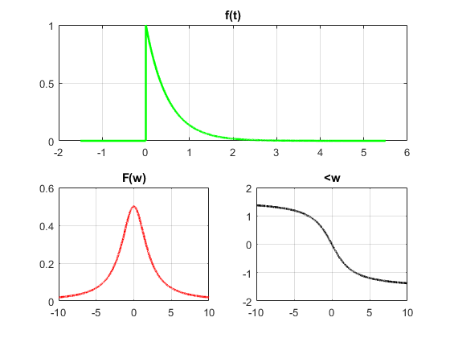
4. Ejemplos del libro de texto (Lathi).
- Ejercicio 1.1
gráfica 1
clear; clc; t=(-2:2); f= @(t) exp(-t).*cos(2*pi*t) plot(t,f(t)) xlabel('t'); ylabel('f(t)'); grid;
f =
function_handle with value:
@(t)exp(-t).*cos(2*pi*t)
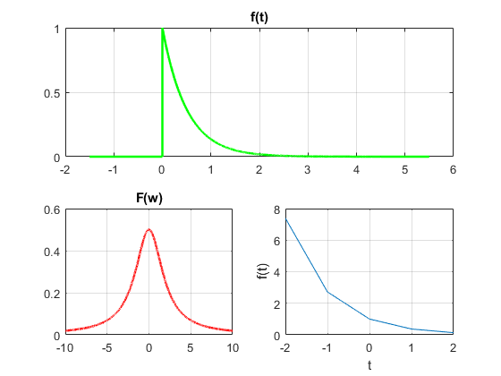 gráfica 2
clear; clc; figure t=(-2:.01:2); f= @(t) exp(-t).*cos(2*pi*t) plot(t,f(t)) xlabel('t'); ylabel('f(t)'); grid;
f =
function_handle with value:
@(t)exp(-t).*cos(2*pi*t)
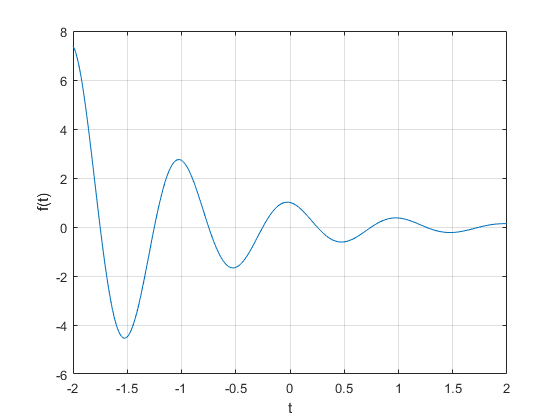 - Ejercicio 1.2
gráfica 1
clear; clc; u= @(t) t>=0; t=-2:2; plot(t,u(t)) xlabel('t'); ylabel('u(t)'); grid on;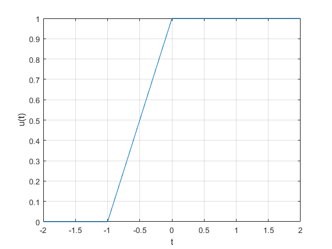
gráfica 2
clear; clc; u= @(t) t>=0; t=-2:2; plot(t,u(t)) xlabel('t'); ylabel('u(t)'); grid on; t=-2:.01:2; plot(t,u(t)) xlabel('t'); ylabel('u(t)'); grid on; axis ([-2 2 -.1 1.1]);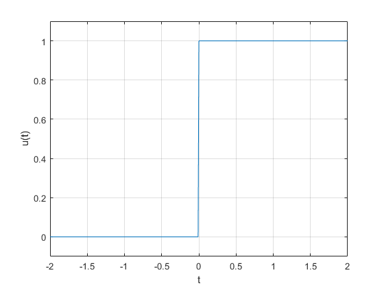
gráfica 3
clear; clc; p= @(t) (t>=0 & t<1); t=-1:.01:2; plot (t,p(t)); xlabel('t'); ylabel('p(t)=u(t)-u(t-1)'); axis ([-1 2 -.1 1.1]) grid;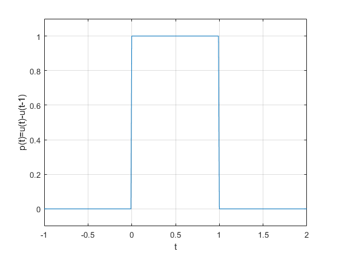
- Ejercicio 1.3
gráfica 1
clear; clc; g= @(t) exp(-t).*cos(2*pi*t).*(t>=0); t=-2:.01:2; plot(t,g(2*t+1)); xlabel('t'); ylabel('g(2t+1)'); grid on;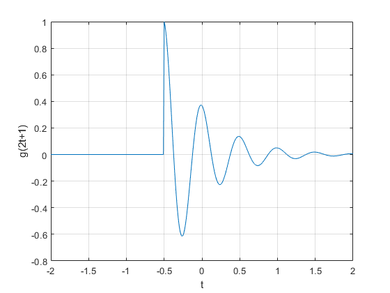
gráfica 2
clear; clc; g= @(t) exp(-t).*cos(2*pi*t).*(t>=0); t=-2:.01:2; plot(t,g(-t+1)); xlabel('t'); ylabel('g(-t+1)')'; grid;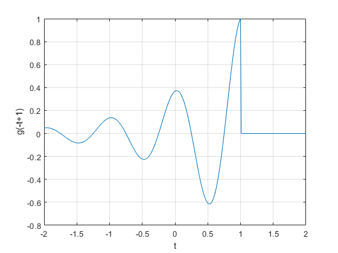
gráfica 3
clear; clc; g= @(t) exp(-t).*cos(2*pi*t).*(t>=0); t=-2:.01:2; plot(t,g(2*t+1) +g(-t+1)); xlabel('t'); ylabel('h(t)')'; grid;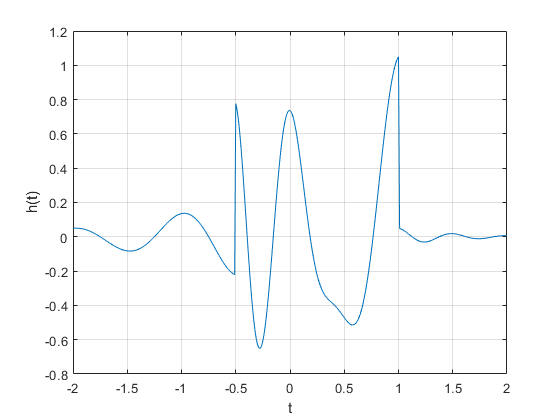
Ejercicio 1.4
clear all;
x= @(t) exp(-t).*((t>=0)&(t<1))
t1= 0:0.01:1;
t= 0:0.001:100;
E_x =sum(x(t).*x(t)*0.01)
x_squared= @(t) exp(-2*t).*((t>=0)&(t>1))
E_x= quad(x_squared,0,1)
g_squared=@(t) exp(-2*t).*(cos(2*pi*t).^2).*(t>=0);
E_g=sum(g_squared(t)*0.001)
E_g=quad(g_squared,0,100)
x =
function_handle with value:
@(t)exp(-t).*((t>=0)&(t<1))
E_x =
4.3276
x_squared =
function_handle with value:
@(t)exp(-2*t).*((t>=0)&(t>1))
E_x =
0
E_g =
0.2567
E_g =
0.2562
5. Problema 1.2.2 utilizando MATLAB
punto51(X1, Y1, Y2, Y3, Y4, Y5, Y6)
Undefined function or variable 'X1'. Error in P02 (line 294) punto51(X1, Y1, Y2, Y3, Y4, Y5, Y6)
6. Función para calcular la energía
NOTA: funcion energia(limite inferior,limite superior,funcion)
Prueba con funcion simbolica
syms a1 b1 t1 Q=energia(a1,b1,t1*exp(-t1)) subs(Q,{a1,b1},{0,2})
Ejercicio 1.1.3 Parte a
x = 1*(heaviside(t1)-heaviside(t1-2)); y = 1*(heaviside(t1)-heaviside(t1-1))-1*(heaviside(t1-1)-heaviside(t1-2)); a=0; %% a es el limite inferior b=2; %% b es el limite superior Ey = energia(a,b,y) Ex = energia(a,b,x) Esuma = energia(a,b,x+y) Eresta = energia(a,b,x-y)
Ejercicio 1.1.3 Parte b
xb = sin(t1)*(heaviside(t1)-heaviside(t1-2*pi)); yb = 1*(heaviside(t1)-heaviside(t1-2*pi)); ab=0; %% a es el limite inferior bb=2*pi; %% b es el limite superior Eyb = energia(ab,bb,yb) Exb = energia(ab,bb,xb) Esumab = energia(ab,bb,xb+yb) Erestab = energia(ab,bb,xb-yb)
Ejercicio 1.1.3 Parte c
xc = sin(t1)*(heaviside(t1)-heaviside(t1-pi)); yc = 1*(heaviside(t1)-heaviside(t1-pi)); ac=0; %% a es el limite inferior bc=pi; %% b es el limite superior Eyc = energia(ac,bc,yc) Exc = energia(ac,bc,xc) Esumac = energia(ac,bc,xc+yc) Erestac = energia(ac,bc,xc-yc)
7. Función para calcular la potencia
NOTA: funcion energia(funcion,periodo)
Prueba con funcion simbolica
syms t1
Q = potencia(t1.^2,2)
Ejercicio 1.1.4 inciso a
fa = -(t1.^3); Pa = potencia(fa,4)
Ejercicio 1.1.4 inciso b
fb = 2*(t1.^3); Pb = potencia(fb,4)
Ejercicio 1.1.4 inciso c
syms c
fc = c*(t1.^3);
Pc = potencia (fc,4)